去程航班 JX820 (星宇航空)
辦理入境手續與領取行李。請事先填寫好 Visit Japan Web 的入境與海關申報，以加快出關時間。
搭乘南海電鐵特急 Rapi:t 直達【新今宮站】（車程約 37 分鐘）。
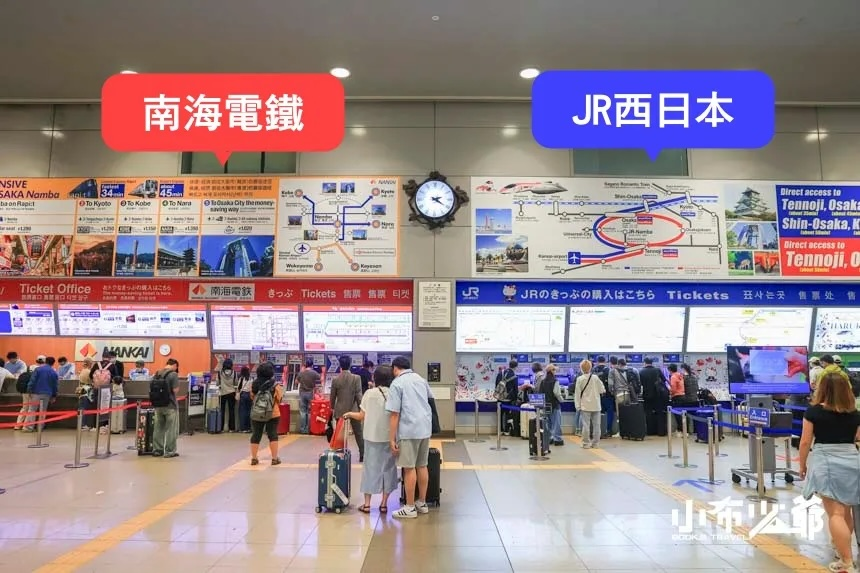
>>購票機對面搭乘>>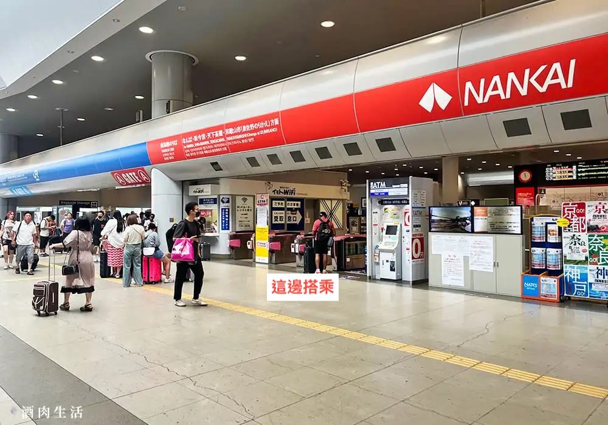
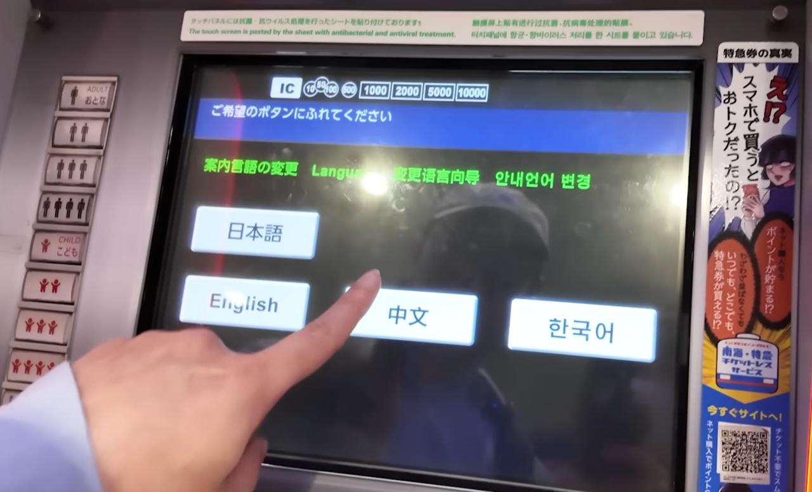
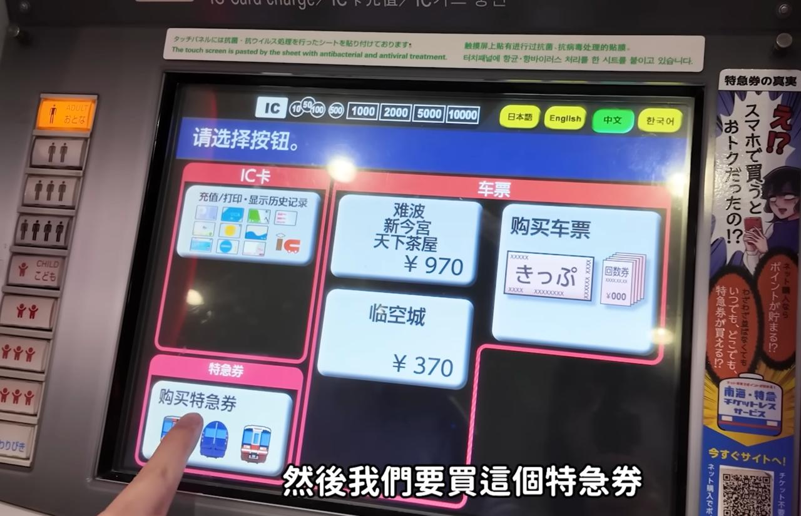
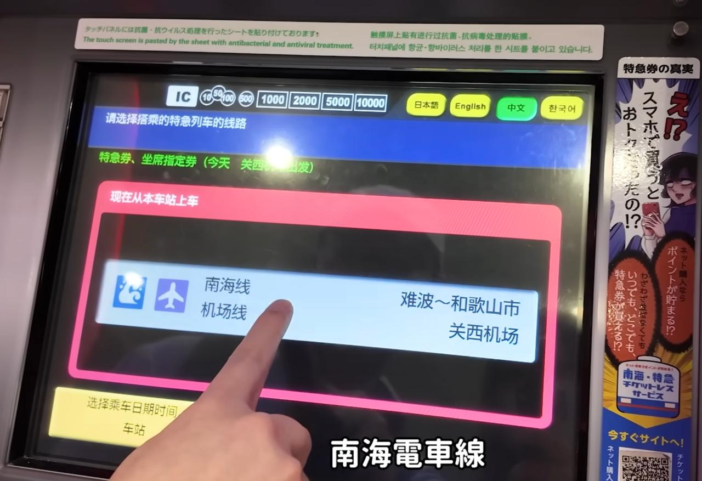
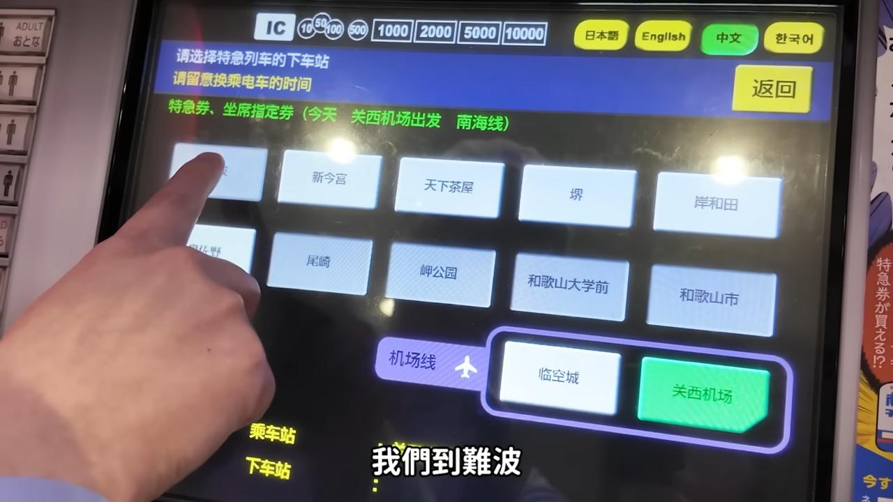
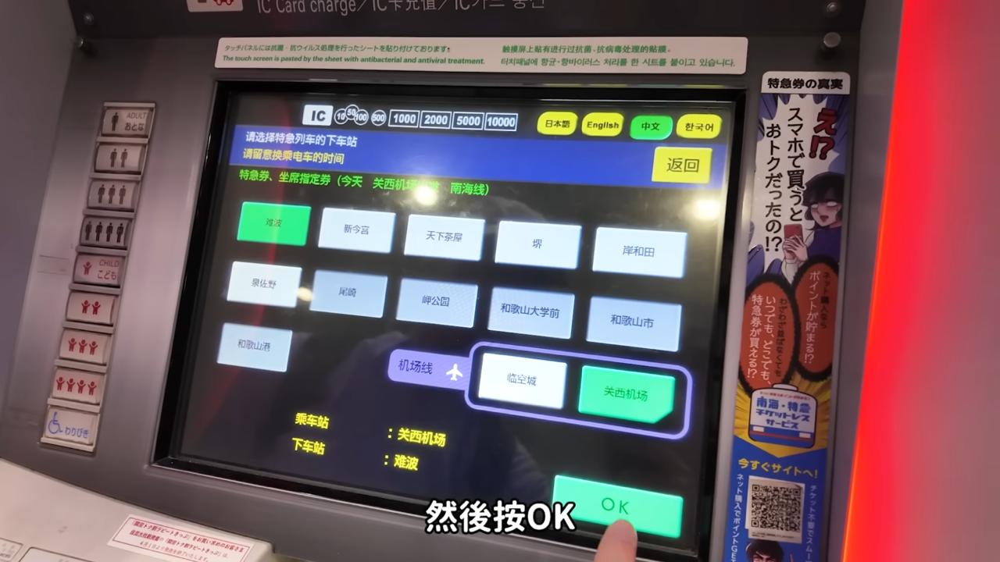
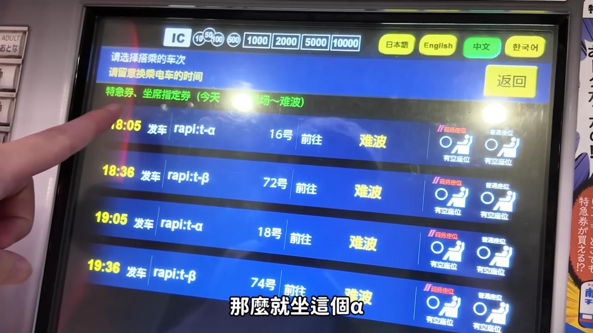
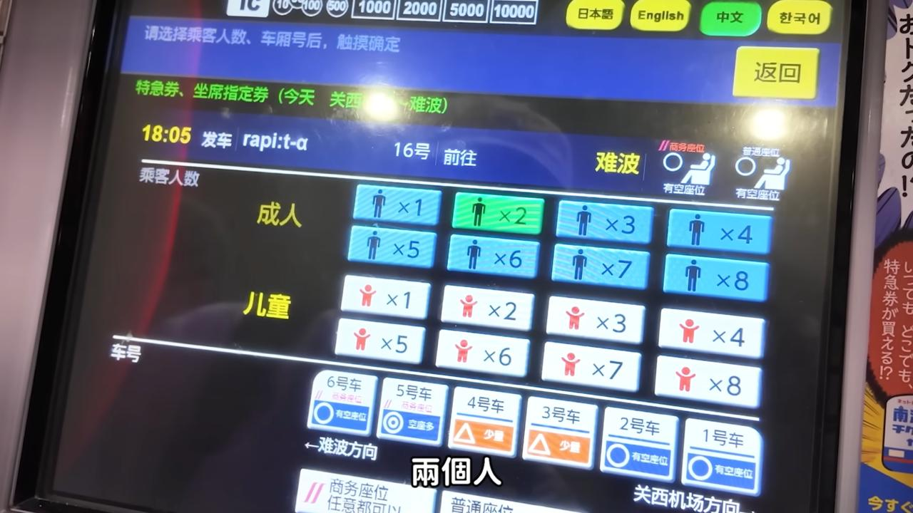
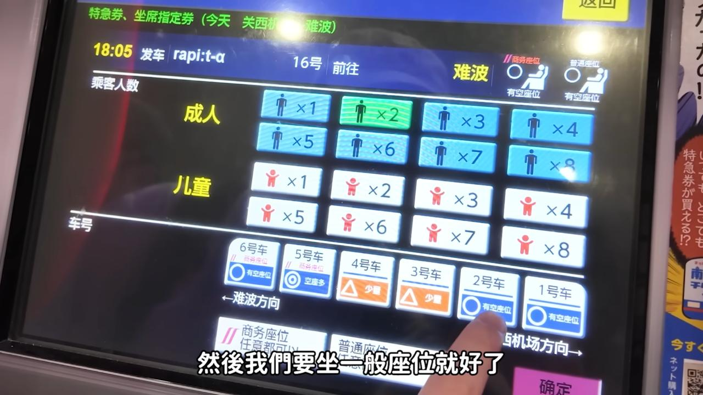
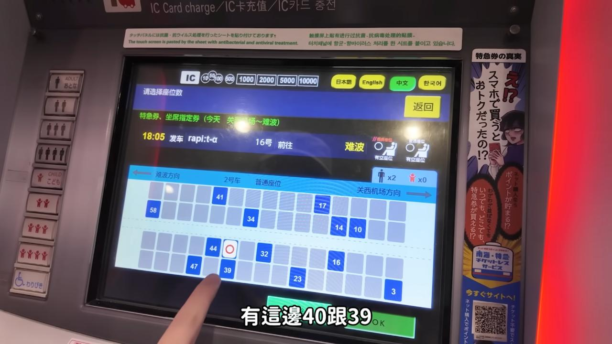
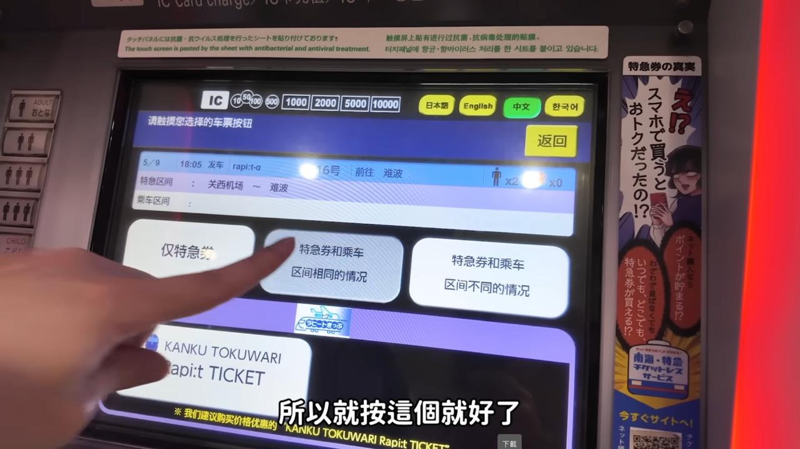
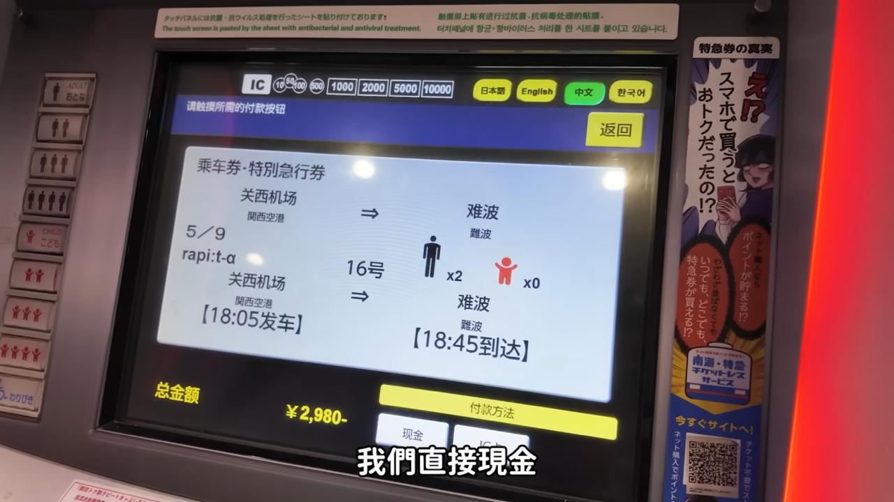
交通指引：位於南海電鐵「新今宮」站北出口出來的右手邊，出站即達。在此連續住宿五晚，無須搬運行李。
自新今宮搭乘南海本線電車直達住吉大社站，僅 8 分鐘，超強順路！
搭乘南海電車自住吉大社返回【難波站】（約 10 分鐘），從 5 號出口步行 5 分鐘抵達千房千日前本店。
預約時間為 18:00，預約吧台席，近距離欣賞師傅現場鐵板料理與超療癒的高空美乃滋拉花秀！
VX32CLGUUK搭地鐵御堂筋線/堺筋線返回 OMO7 大阪休息。
於 OMO7 大阪接駁巴士乘車處集合準備登車。
5235407搭乘專車直達日本環球影城，預計於 08:30-08:40 抵達。
🎟️ 快速通關已購買：Universal Express Pass 4 ~Minecart & Jurassic Park~
遊玩好萊塢美夢乘車遊、觀看各項遊行表演與周邊採購。
💡 爸爸愛的提醒：
下午 14:30 ~ 16:00 孩子體力開始下降，強烈建議安排觀看 Sing 歡唱秀 (Sing On Tour) 室內劇場，或找冷氣餐廳休息 1.5 小時充電，以確保 17:40 進入任天堂世界時體力充足！
憑保證入場券進入園區，並依序使用快速通關搭乘設施：
19:00 - 20:30 晚餐：可在園區內享用美式漢堡/點心，或到 Universal CityWalk 徒步街享受美食：
搭乘 JR 電車返抵【新今宮站】回 OMO7 飯店休息。
搭乘地鐵前往【大阪城公園】與【大阪城天守閣】。
享用高質感超值的燒肉商業午餐套餐！
UZ9GKYKUE8第一階段（梅田西區/中央）：
第二階段（梅田東區經典巡禮 — 參考心甜影片精華）：
於藍天大廈周邊或瀧見小路享用美食：
前往梅田藍天大廈空中庭園展望台欣賞大阪絕美夜景。
請於 07:45 提前報到並登車出發。
預計停留 2.5 小時，漫步嵐山並享用午餐：
13:45 - 14:55 體驗：於奈良公園餵食鹿仙貝、與野生小鹿互動，並可參觀東大寺。
16:00 - 17:30 參拜：觀賞壯觀的千本鳥居，品嚐參道小吃及狐狸煎餅。
💡 爸爸愛的提醒：
千本鳥居步道階梯多，帶 7 歲孩子走到「奧社奉拜所（約15分鐘）」拍照合照即可折返，切勿爬完全山以保持體力！
預計於 18:40 返抵【蟹道樂 道頓堀東店】解散，並在附近享用晚餐：
品嚐大阪廚房的美味海鮮與頂級肉品：
採購模型公仔、一番賞與周邊玩具：
大牌鞋款與潮流服飾採購：
享用精緻美味的黑毛和牛燒肉：
花鯨關東煮 (花くじら Hanakujira 本店)
心甜美食影片狂推！Tabelog 4.3 ⭐️ 長年百名店，極具日劇小店溫暖氛圍。
返回 OMO7 大阪飯店整理行李與戰利品裝箱，準備明日返台。
在 OMO7 享用悠閒早餐並辦理退房手續。
於【新今宮站】搭乘【南海電鐵特急 Rapi:t】直達【關西機場 T1】（車程約 37 分鐘）。
抵達關西機場 1 航廈，辦理星宇航空 (JX821) 登機與託運手續。
12:00 - 13:00 午餐：在關西機場 T1 餐廳街享用（如勝博殿豬排、關西機場美食街）或等待搭乘 13:25 星宇航空 (JX821) 享用精緻飛機餐。
回程航班 JX821 (星宇航空)